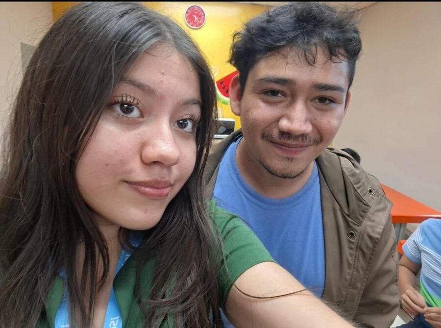
SofiaHasta prontoOctubre 2026
Sergio
Gracias por enseñarnos, acompañarnos y creer en cada uno de nosotros.
↓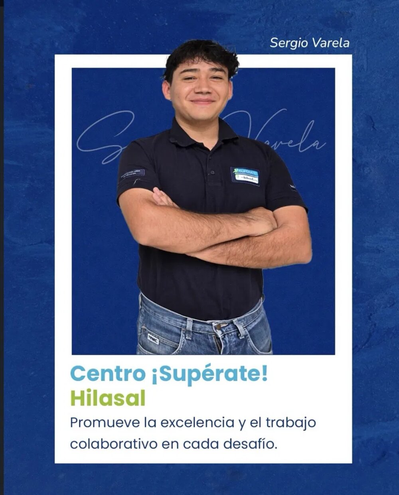
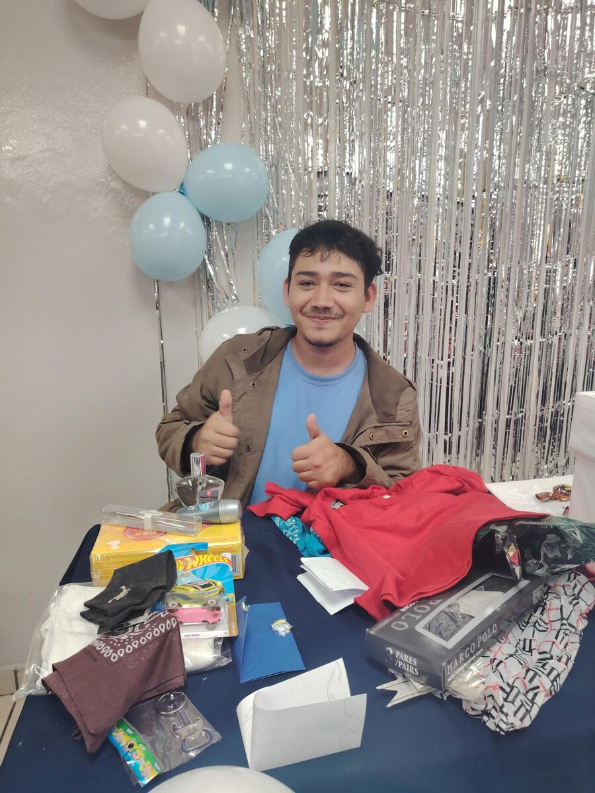
Una carta de tus estudiantesInformática
Somos los estudiantes que aprendieron contigo a pensar, a programar y a creer en nosotros mismos. Gracias por cada clase, por cada reto y por cada vez que nos dijiste que sí podíamos.
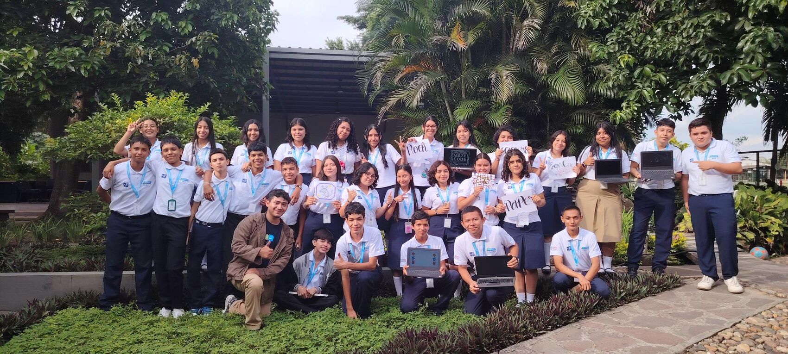
Momentos (15)
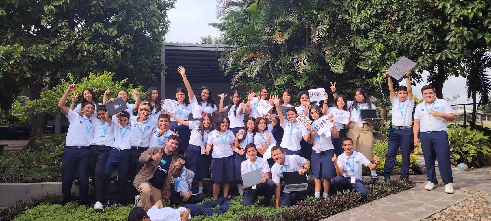
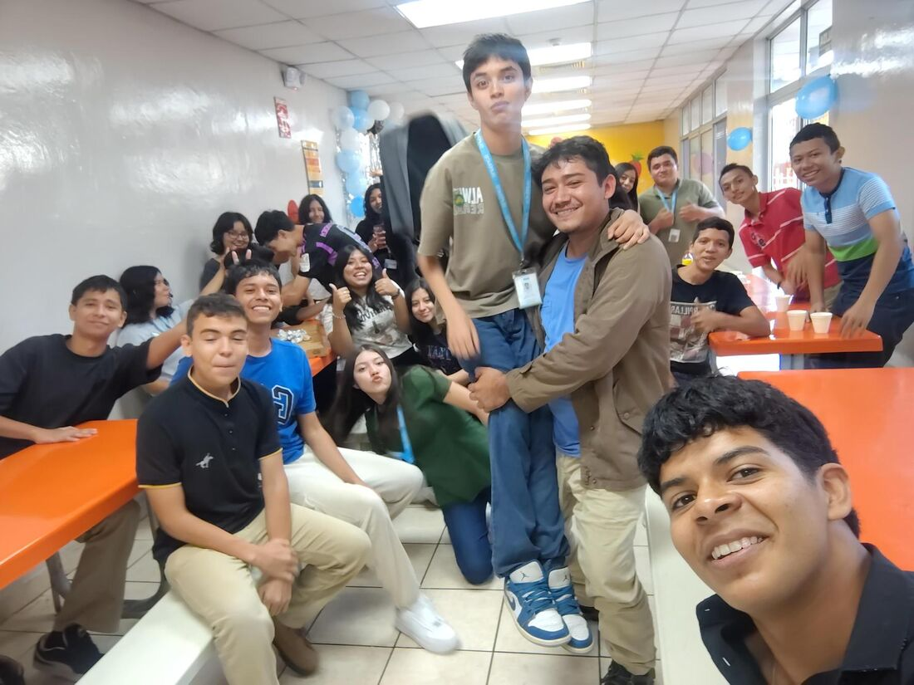
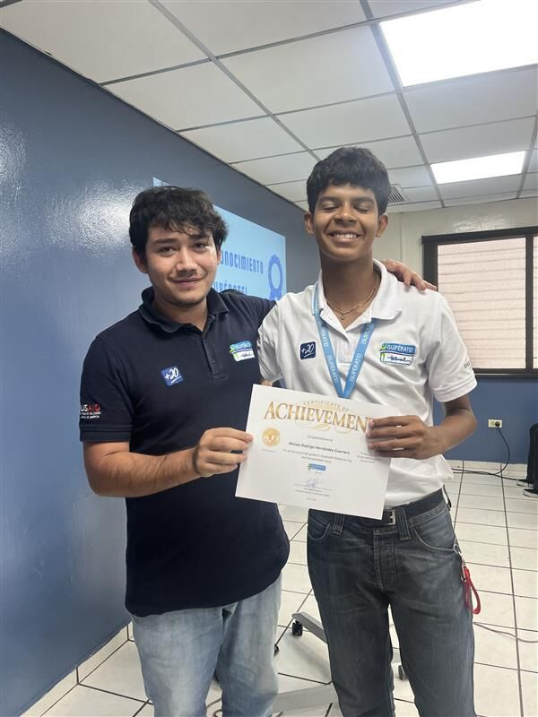
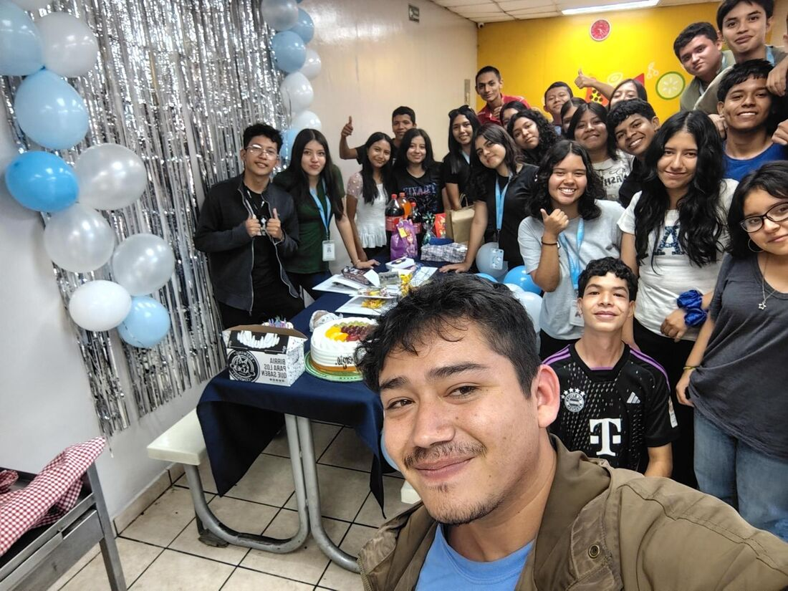
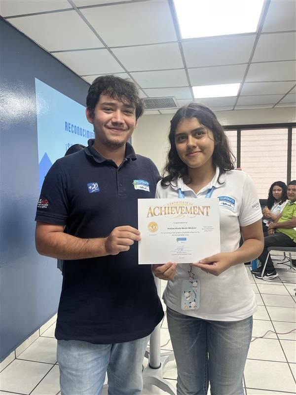
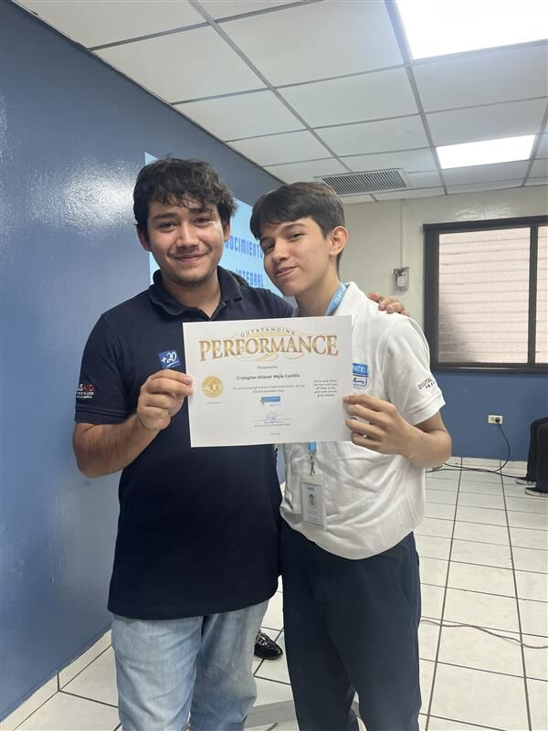
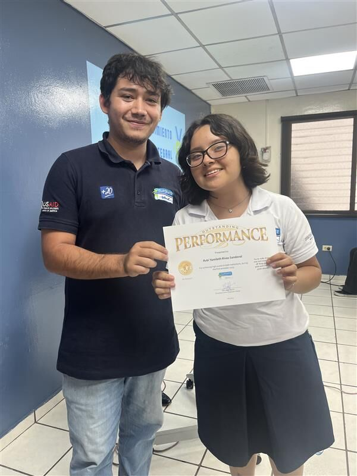
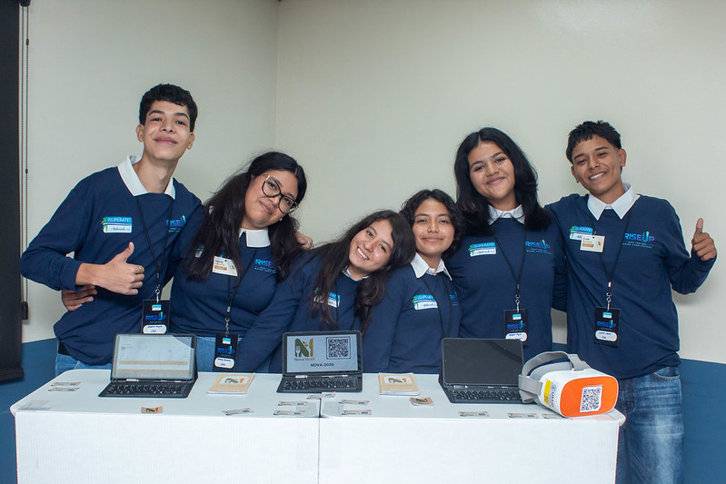
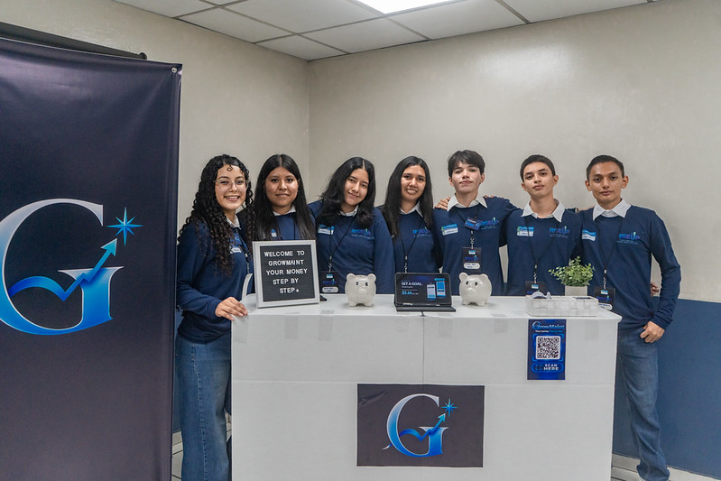
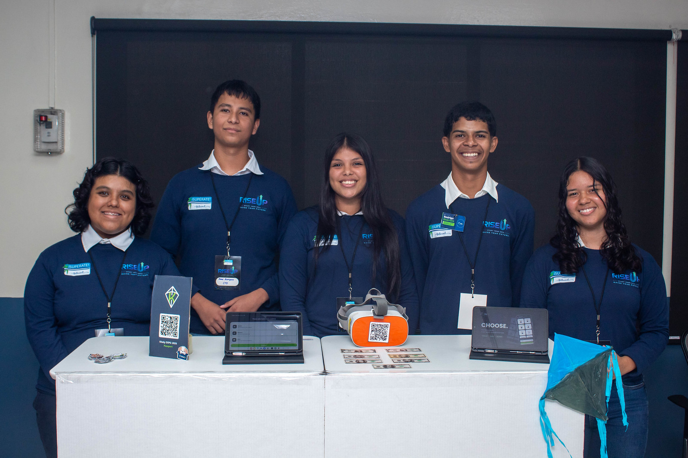
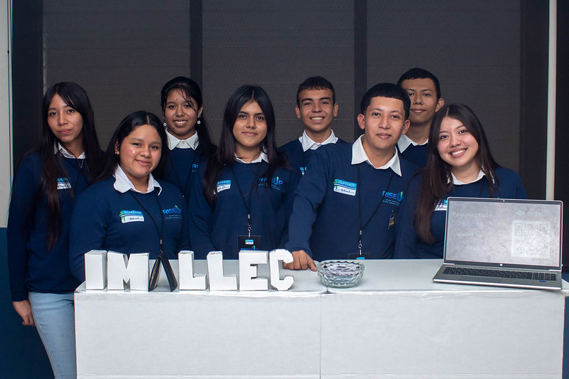
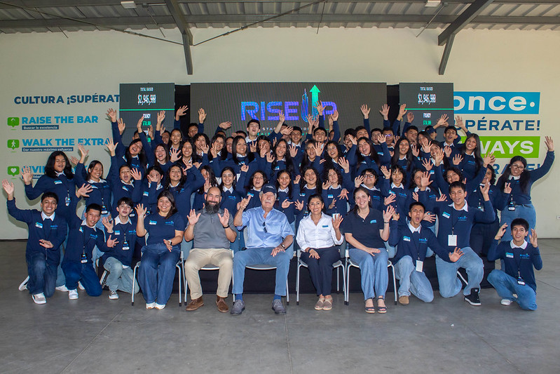
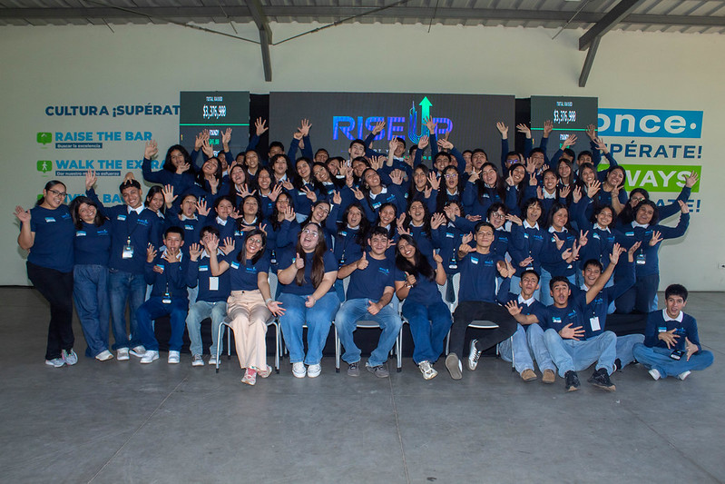
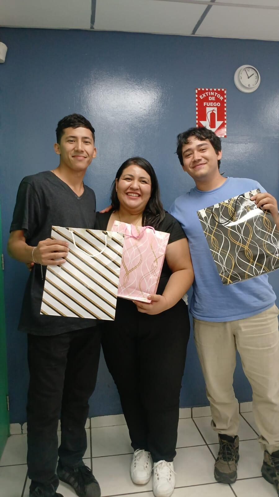
Un regalo para los Tres
Los tres, juntos y sonriendo.
Entre regalos y risas, aqui estan los tres que nos ayudaron y nos guiaron durante el año pasado, nadio en ese entornoimaginaria que de esos tres solo va a quedar uno, pero aun asi ustedes fueron los que nos ayudaron e inplusaron ahaste el dia de hoy.
Lo que nos llevamos
1
Teacher que nos enseñó a crear con la computadora.
∞
Gracias por cada clase, cada reto y cada risa.
100%
De corazón en todo lo que nos compartiste.
Voces del grupo (para Sergio)
Mensajes de agradecimientoLógicaAprendimos a pensar paso a paso
CódigoDel primer laberinto al primer programa
EquipoNadie se queda atrás en tu clase
Muro de mensajes
Los espacios punteados son para ustedesGracias por estar siempre ahí para mí T.Sergio, por motivarme, apoyarme y hacerme reír con sus bromas. Deseo de corazón que la vida lo sorprenda con mucho éxito, alegrías y cosas bonitas, porque se lo merece. Gracias por confiar en mi incluso en aquellos momentos en los que ni yo misma creía que era capaz de lograrlo.
Teacher Sergio, quiero agradecerle por todo lo que me enseñó durante estos dos años. Nunca pensé que me llegaría a gustar programación y usted lo logro. Realmente lo admiro bastante por todo lo que hace y ha logrado; deseo que siempre le lleguen cosas bonitas porque se lo merece. Lo quiero mucho teachersito y lo extrañare demasiado en el centro. <3
Perdón por hacerle la tumba portones Teacher 💜
Muchas graciaas teacher por siempre enseñarme a no rendirme, a dar un más de mí y por siempre confiar en mi potencial. ¡Gracias por siempre enseñarme a soñar en grande y enseñarme nunca perder mi propia confianza!
Teacher Sergio, antes que nada, quiero agradecerle por todo lo que ha hecho por nosotros. Gracias por hacerme sentir especial en un día que no suele ser de mis favoritos, por apoyarnos y confiar en nuestro potencial. Me alegra muchísimo saber que está cada vez más cerca de cumplir su sueño. Le deseo muchos éxitos y felicidad en esta nueva etapa, y espero que nunca nos olvide, porque nosotros lo recordaremos con mucho cariño ❤️
Es raro pensar que ya no voy a tener clases con usted, teacher. Da como esa nostalgia bonita, melancólica, porque aunque se acaba esta etapa, siempre me voy a acordar de usted. De cómo nos daba las clases, de los consejos que nos daba que iban más allá de la materia, y sobre todo, de lo bien que la pasábamos. Gracias por todo eso, se le va a extrañar mucho, le deseo muchos éxitos en sus logros ⭐ gracias por todos los buenos momentos que pasamos...Extrañaré aquellos exámenes demo sorpresa y sobre todo las risas que nunca faltaban...Lo extrañaré teacher...
Le deseo mucha suerte T. Sergio, muchas gracias por ser de las mejores personas que he conocido en mi vida, se que esta es una oportunidad enorme para usted y es por eso que espero que Diosito me lo bendiga en cada paso que de y le de toda la sabiduría para enfrentar los nuevos retos que se viene, lo voy a extrañar mucho, ahora ud dejara la racha, cuidese mucho teachercito :( 🤍
Teacher Sergio, hay teachers que solo enseñan y otros que, sin darse cuenta, dejan huellitas bonitas en nosotros, como ustd por q no solo nos mostro q es ser un buen teacher y amigo. Recuerde siempre q estamos orguñosos de ustd y de sus logros y sin duda brillará donde sea que vaya. ✨ ..
Querido Teacher Sergio:
He de confesarle que mientras escribo esto estoy llorando, nunca pensé que iba a escribir este mensaje no pensé que algún día íbamos a tener que despedirnos los momentos que pasamos al recordarlos me hacen sentir una nostalgia que no se puede explicar recordar todas esas regañadas porque estaba hablando en clase y cuando me preguntaba para ver si de verdad estaba prestando atención y no le podía responder aún así no regañarme y solo decirme "preste atención por favor" siempre voy a estar agradecido con usted ya que si no fuera por su enseñanza y por su amistad nunca hubiera logrado todo lo que he logrado en el área de informática, recordar que cuando tenía un problema, que el código no salía siempre ahí estaba usted para ayudarme, siempre voy a recordar cuando terminaba la clase y le decía "va a ir a jugar" y usted siempre me decía "ya voy a llegar" son momentos que nunca voy a olvidar y pensar que ya no se van a poder repetir me hace llorar créame que siempre voy a estar agradecido con usted y siempre lo voy a llevar en mi corazón usted se volvió más que un teacher para mí se volvió parte de un grupo muy importante para mí se volvió un amigo más, alguien en qué puedo confiar para contar los problemas por los que estoy pasando alguien en qué puedo confiar para decirle los chismes, los chistes las locuras que hacíamos y yo sé usted siempre iba a escucharme con una sonrisa o siempre iba a decirme algo más para sacarme una sonrisa, siempre voy a apreciar su cariño que demostró por mi, siempre voy a recordar ese viaje en el bus donde dejamos los problemas las tareas y solo convivimos como lo que somos amigos ese día nunca se me va a olvidar recordar la seguridad con la que podíamos decirle cualquier cosa y tener la seguridad de que ante cualquier problema usted siempre me iba a ayudar siempre sentí esa seguridad de poder contar con usted créame que va a ser muy difícil vivir momentos que siempre los pasábamos con usted pensar en el echo de que para los intercentros ya no vamos a poder ir en el bus riendo y contando chismes me hace llorar ya que usted se volvió una persona muy importante para mi nuevamente lo voy a extrañar mucho, la hila ya no va ser lo mismo sin usted, lo quiero mucho espero que algún día nos podamos volver a reunir, nuevamente muchas gracias por todo.
Con cariño Bonilla, le deseo muchos éxitos lo quiero mucho cuídese.
Bueno hola teacher Sergio solo quería darle gracias por habernos dado clases usted demostró que sí se puede llevar una relación de amistad y a la vez estudiante y profesor agradezco mucho de que usted haya estado con mi teacher ni la sal siempre lo voy a apreciar mucho ha sido el mejor teacher que he tenido y siendo sincera es un ejemplo a seguir para mí ya que ha demostrado que sin importar todo usted ha salido adelante de las veces que contaba cuando usted iba a trabajar mientras estudiaba ahorita cómo estás trabajando de nuevo mientras está estudiando en su universidad gracias a Dios que por todo lo que usted ha pedido todo esa meta que ha logrado tener hasta ahorita es gracias a todo el esfuerzo que usted ha puesto y créame que que todo segundo vespertino de la tarde está súper orgulloso de usted ver al estudiante y hombre que se ha convertido ahorita y estamos muy felices por la oportunidad que usted tiene ahorita y bueno felicitarlo y esperar que le vaya muy bien y bueno solamente decir de que se cuide tome agüita y, bien no se vaya a andar descuidando porque así como usted dice hay que dormir bastante y después volver a estudiar si usted tampoco se va a andar descuidando de su salud física y bueno lo queremos mucho teacher Sergio
Muchas gracias teacher por todos los buenos momentos, por sus consejos y todo su apoyo. Usted ha sigo alguien muy importante en mi vida y me ha ayudado a ver mi potencial y es por eso que yo siempre voy a estar agradecida con usted.
Teacher Sergio, muchas gracias por todo lo que nos ha enseñado, le deseo de corazón lo mejor en esta oportunidad que Diosito le ha concedido aunque en el fondo nos cueste aceptar que ya no estará con nosotros en !Superáte¡, enserio le agradezco infinitamente cada enseñanza y cada momento compartido, no se imagina cuánto lo apreciamos.
Gracias por hacer de cada clase una aventura nueva, por hacernos sentir que, además de sus alumnos somos sus amigos, por estar ahí para reír en los buenos momentos y hasta para regañarnos en los difíciles, gracias por cada consejo, por su confianza, por consentirnos tanto y por esos detalles en cada día especial duele pensar que ya no compartiremos mas peliculas, dinamicas, chistes, chismes ni cada pequeño instante que hizo este tiempo tan especial pero sé que nos volveremos a ver por que esto no es un adiós definitivo sino un hasta pronto, pero aun así deja un vacío grande en ¡Superáte! deseo con el alma verlo triunfar, cumplir cada uno de sus sueños y que nunca, nunca se olvide de estos niños que, aunque a veces le sacaban canas verdes lo van a extrañar con todo el corazón siempre lo llevaremos en nuestros corazones teacher ya que usted no ha sido solo un teacher a sido el mejor teacher que hemos podido tener en nuestras vidas usted siempre tendrá un lugar en el corazón de cada uno de nosotros y le aseguro que muy pronto nos volveremos a ver y volveremos a compartir buenos momentos y crear nuevas expresiones, con mucho cariño Josué.
Por qué lo vamos
a extrañar
Mezcló tecnología, paciencia y buen humor para que cada clase valiera la pena.
Cada logro contaba, grande o pequeño.
Enseñar
Explicaba hasta que se entendía
Sin prisa y sin hacernos sentir que preguntar era un error.
Una clase donde cabíamos todos.
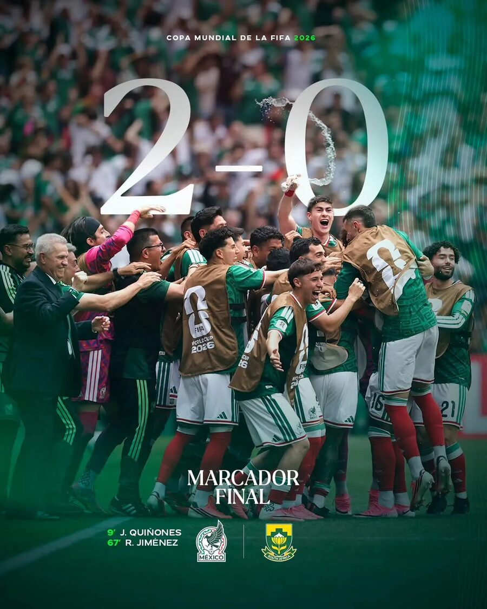
Crear
Pasamos de usar la computadora a hacer cosas con ella
Laberintos, juegos y proyectos que nos enorgullecen.
Acompañar
Siempre estuvo ahí
En clase, en los retos y en su fiesta de cumpleaños.
Lo que hicimos
juntos
Juegos, hackathon y expo: los proyectos que armamos con Sergio.
Proyecto
Juegos
Los proyectos de videojuegos. Cada tarjeta te lleva al repositorio en GitHub.
Proyecto
Hackathon
Los proyectos presentados en el hackathon. Cada imagen muestra un equipo.


Proyecto
Expo
Los proyectos presentados en la Expo. Cada tarjeta muestra el logo y te lleva al repositorio en GitHub.